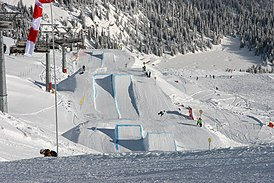

Сноубо́рд, сноубо́рдинг (англ. Snowboarding от англ. snow — снег и англ. board — доска) — зимний олимпийский вид спорта,заключающийся в спуске с заснеженных склонов и гор на специальном снаряде — сноуборде. Изначально зимний вид спорта,хотя отдельные экстремалы освоили его даже летом, катаясь на сноуборде на песчаных склонах(сэндбординг).
Поскольку, зачастую, катание на сноуборде проходит на неподготовленных склонах и на больших скоростях, для защиты от травм используется разнообразная экипировка — шлемы, защита суставов, рук, ног, спины.
На зимних Олимпийских играх 1998 года в Нагано сноуборд был впервые включён в олимпийскую программу.
История
Изобретение сноуборда относят к началу 1960-х годов. Шерман Поппен из города Маскигон[en], штат Мичиган, придумал и изготовил для своей дочери в 1965 году современное подобие сноуборда, названное снёрфером (snurfer — слово, составленное из двух других — snow («снег») и surf — «сёрф»). Он склеил две лыжи в одно целое. По своей конструкции снёрфер был очень близок к скейтборду, только без колёс. Снёрфер не имел креплений, и чтобы удержаться на доске, катающийся должен был держаться за верёвку, привязанную к носу. Инструкция по пользованию также рекомендовала использовать для катания нескользящую обувь. Уже в 1966 году было начато производство снёрфера в качестве детской игрушки
На протяжении последующих лет росла популярность этого вида спорта. Большой вклад в совершенствование снаряжения внесли такие люди, как Димитрий Милович, Джейк Бёртон (основатель компании Burton Snowboards), Том Симс (основатель компании Sims Snowboards) и Майк Олсон (основатель компании Mervin Manufacturing). Сёрфер с восточного побережья США Димитрий Милович в 1972 году основал компанию Winterstick по выпуску сноубордов, которая уже через 3 года удостоилась упоминания в журнале Ньюсуик. Доски Winterstick наследовали конструкционные принципы от снёрфа и лыж
В 1979 году, неподалёку от города Гранд Рапидс, штат Мичиган, был проведён первый в истории Мировой чемпионат по снёрфингу. В этих соревнования участвовал и Джейк Бёртон, который усовершенствовал снёрфер, добавив крепления для ног. Такое усовершенствование вызвало протест со стороны других участников, так как его снаряд отличался от оригинального. Однако Пол Грейвс, лучший из снёрфингистов того времени, совместно с другими спортсменами, уговорили организаторов допустить его к соревнованиям. В результате был создан отдельный конкурс, в котором Бёртон и победил, будучи единственным участником. Данный чемпионат теперь принято считать первыми в истории соревнованиями по сноуборду, как самостоятельной дисциплине.
В 1982 году в местечке Суисайд Сикс (недалеко от города Вудсток, штат Вермонт) были проведены первые общенациональные соревнования США по слалому. В 1983 году, на Сода Спрингс, штат Калифорния, состоялся первый Мировой чемпионат по хафпайпу. Организатором выступили Том Симс и Майк Чантри, местный инструктор по сноуборду[1].
Рост популярности сноуборда привёл к официальному признанию его как зимнего вида спорта: в 1985 году на австрийском горнолыжном курорте Цюрс состоялся первый Мировой кубок. Годом ранее, для разработки общих правил соревнований и организации их проведения была создана Международная ассоциация сноуборда (ISA)[1]. В середине 1990-х годов МОК признал в качестве официального руководящего органа сноубордом Международную федерацию лыжного спорта (ФИС). Поэтому все крупные международные соревнования по сноуборду с середины 1990-х годов стали проводиться под эгидой и по правилам Международной федерации лыжного спорта
На зимних Олимпийских играх 1998 года в Нагано, Япония, сноуборд стал официальным олимпийским событием. Француженка Карин Руби была первой, кто выиграл золотую олимпийскую медаль по сноубордингу среди женщин, а канадец Росс Ребальяти был первым, кто выиграл золотую олимпийскую медаль за сноубординг среди мужчин.
К 2000 году сноуборд как вид спорта прочно завоевал своё место. По сноуборду проводятся все виды соревнований высшего уровня: Олимпийские игры, Чемпионат мира, Кубок мира, X-Games, US Open и другие. Эти соревнования транслируются телевидением по всему миру. Многие горнолыжные курорты создают специальные сноуборд-парки — сооружения из снега для трюкового катания на сноуборде (и лыжах).
В течение многих лет между лыжниками и сноубордистами существует враждебность. В течение нескольких лет сноубордисты должны были пройти проверку навыков, прежде чем они будут допущены на подъёмник. Считалось, что неквалифицированный сноубордист сотрёт снег с горы. В 1985 году только семь процентов горнолыжных зон в США и Европы разрешали кататься на сноуборде. По мере улучшения снаряжения и навыков, сноуборд становился всё более популярным. В 1990 году уже большинство основных горнолыжных зон имели отдельные склоны для сноубордистов. В настоящее время примерно 97 % всех горнолыжных зон в Северной Америке и Европе разрешают кататься на сноуборде, и более половины имеют трамплины. В 2004 году количество сноубордистов составило 6,6 миллионов (25 % из них составляли женщины). В сезоне 2009—2010 годов в США и Канаде было 8,2 миллиона сноубордистов. По сравнению с предыдущим сезоном рост составил 10 %, что составило более 30 % всех участников зимних видов спорта[6].
2 мая 2012 года Международный параолимпийский комитет включил «пара-сноуборд» в зимние Параолимпийские игры 2014 года, проходящих в Сочи, Россия.
Спортивные дисциплины
Официально признанные дисциплины
- параллельный слалом (PSL) — являлся олимпийской дисциплиной Игр 2014 года, после чего в 2015
по решению исполкома
исключён. Два спортсмена спускаются по параллельным трассам с установленными на них флагами синего и
красного цветов.
- параллельный гигантский слалом (PGS) — олимпийская дисциплина с Игр 2002 года. Сноубордист
должен преодолеть трассу
размеченную воротами за наименьшее время.
- сноуборд-кросс (SBX) — олимпийская дисциплина с Игр 2006 года. Сноубордист должен спуститься
по длинной пологой и
широкой трассе, на которой расположены различные препятствия (фигуры рельефа, трамплины).
- хафпайп (HP) — олимпийская дисциплина с Игр 1998 года. Сноубордист должен выполнять различные
трюки на сноуборде во
время вылетов с вертикальной части хаф-пайпа (сооружение похожее на половину трубы).
- слоупстайл (SBS) — олимпийская дисциплина с Игр 2014 года. Сноубордист должен пройти трассу с
множеством снарядов для
выполнения акробатических трюков.

- биг-эйр (BA) — включён в программу Игр 2018 года[10]. Длинный и затяжной прыжок с трамплина,
во время которого
сноубордист выполняет какой-либо трюк
Непризнанные дисциплины
Направления сноуборда
Жёсткий сноуборд
- Карвинг, во всех его разновидностях
- Гоночные техники — направленные на то, чтобы пройти трассу максимально быстро
- параллельный слалом
- параллельный гигантский слалом
- сноуборд-кросс
Фристайл
- Прыжки на трамплинах
- Катание с использованием различных построек: лестниц, перил, скамеек, парапетов (всего, по чему может скользить сноуборд)
- Техники трюков на поверхности склонов
- Преодоление препятствий
- сноуборд-кросс
- хафпайп
- слоупстайл
- биг-эйр
- джиббинг
Фристайл
- Прыжки на трамплинах
- Катание с использованием различных построек: лестниц, перил, скамеек, парапетов (всего, по чему может скользить сноуборд)
- Техники трюков на поверхности склонов
- Преодоление препятствий
- сноуборд-кросс
- хафпайп
- слоупстайл
- биг-эйр
- джиббинг
Фрирайд
Фрирайд — направление сноуборда, предполагающее свободное катание, не ограниченное подготовленными склонами или парками, без жёстко заданных маршрутов, целей или правил. Существуют организации, которые устраивают выездные состязания с элементами фрирайда, например спуск по заранее не опробованному маршруту.
Пара-сноуборд
Пара-сноуборд или адаптивный сноубординг — это изменённая версия сноуборда с правилами, оборудованием и техническими нормами, адаптированными для людей с физическими ограничениями, чтобы они имели возможность заниматься этим видом спорта на рекреационном и соревновательном уровне. В 2014 году включён в программу зимних Паралимпийских игр.
Безопасность и меры предосторожности
Как и многие другие зимние виды спорта, сноуборд сопряжён с риском для здоровья.
Уровень травматизма составляет примерно от четырёх до шести на тысячу человек в день, что примерно в два раза больше травматизма горнолыжного спорта[15]. Большая часть травм приходится на новичков, особенно тех, кто предпочитает учиться катанию самостоятельно. Четверть всех травм у райдеров, впервые вставших на сноуборд, и половина всех травм приходится на людей, имеющих стаж катания менее одного года. Опытные райдеры реже травмируются, но полученные ими травмы обычно более тяжёлые
Две трети травм приходятся на верхнюю часть тела и треть на нижнюю, что отличает сноуборд от горнолыжного спорта, где две трети травм приходится на нижнюю часть тела. Самая травмируемая часть тела — запястья — примерно 40 % всех сноубордических травм приходятся на запястья и 24 % всех сноубордических травм — перелом запястья[16]. Ежегодно во всём мире происходит примерно 100 000 переломов запястий среди сноубордистов[17]. Поэтому использование защиты запястий (встроенная в перчатки или отдельно) настоятельно рекомендуется. Чаще всего они обязательны в группах для новичков и их использование снижает травматизм запястий в два раза[18]. Также очень важно для сноубордистов научиться правильно падать, не используя для остановки падения прямые руки (отталкиваясь от склона), так как согнутое под 90 градусов запястье увеличивает вероятность перелома. Кроме того, профилактикой травмы запястья является его тренировка.
Риск травмы головы от двух до шести раз выше у сноубордистов по сравнению с лыжниками. Рекомендуется использовать шлемы, а также защиту для глаз (которые можно повредить как физически, так и интенсивным отражённым ультрафиолетом). Защищающие от ультрафиолета очки рекомендуются даже в облачную погоду[19]. Нельзя использовать затемняющие очки без защиты от ультрафиолета, так как реагируя на снижение количества света видимого диапазона, глаз открывает зрачок шире, что приводит к тому, что внутрь глаза попадает гораздо больше ультрафиолета. При воздействии большой дозы ультрафиолета, через некоторое время (несколько часов) появляются ощущения как будто в глаз насыпали песок (это первые признаки ожога конъюнктивы), если доля излучения окажется достаточно велика, возможно так же повреждение роговицы. При выборе очков не следует покупать очки с фиолетовыми или синими фильтрами (фильтр не должен пропускать свет с длиной волны меньшей 450 нм), отдавая предпочтение тёмным очкам в зелёно-жёлто-красной цветовой гамме. Жёлтые или жёлто-оранжевые фильтры на четверть повышают контрастное зрение, что хорошо для катания в условиях плохой видимости. Поляризационные фильтры очков позволяют справляться с отражённым от поверхности светом (например, блики от снега), но бесполезны против света от неба и рассеянного света (так как такой свет не поляризован)
В отличие от лыжных креплений, практически все сноубордические крепления спроектированы таким образом, чтобы не отсоединяться при падении. Фиксированное положение ступней снижает количество травм, например процент травм коленей на сноуборде 15 %, в отличие от лыжных 45 %. Типичными для колена являются травмы связок, переломы случаются редко[16]. Переломы голени так же случаются редко примерно 20 % от травм ступни и лодыжки. Перелом таранной кости случается реже, чем в других видах спорта, и составляет примерно 2 % от сноубордических травм[16]. Для защиты коленей применяют специальную защиту, которая бывает также совмещена с защитой голени (которая предохраняет голень, например, при падении на острый угол стола при катании)
Видео
- Absinthe Films
- Brain Farm
- Isenseven
- Mack Dawg Productions
- Pirate Movie Production
- StereoTactic (Россия)
Фильмы о сноуборде
- Академия сноуборда
- Искусство полёта 3D
См. также
- Сноуборд на Олимпийских играх
- Чемпионат мира по сноуборду
- Кубок мира по сноуборду
- Пара-сноуборд